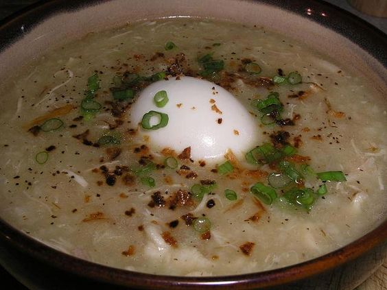
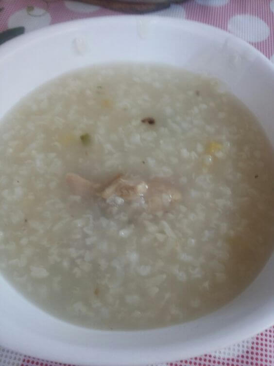
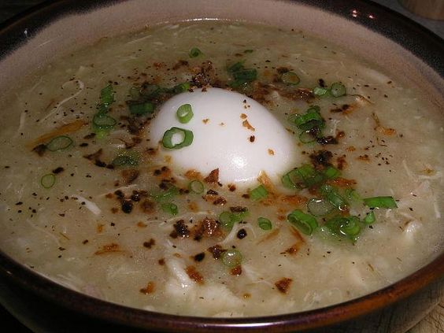
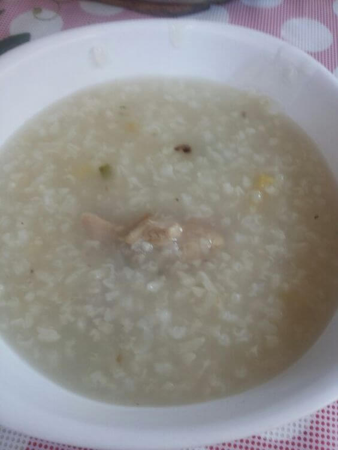

Ang Arozcaldo ay isang masarap at malasa na Filipino comfort food na karaniwang iniluluto at kinakain sa
panahon ng malamig o maulan na panahon. Ito ay isang lutuin na galing sa mga Kastila, at sa Tagalog ay
tinatawag itong "arroz caldo" na nangangahulugang "malagkit na bigas na sabaw.
Sa kasaysayan ng Arozcaldo, ito ay nagmula sa paunang pagdating ng mga Kastila sa Pilipinas. Ang kanilang
kultura, tradisyon, at kusina ay nagkaroon ng malaking impluwensiya sa mga lokal na kultura at mga lutuing
Pilipino. Ang arroz caldo ay isa sa mga mga halimbawa ng paggamit ng mga lokal na sangkap at pamamaraan ng
pagluluto upang lumikha ng isang bagong pagkain na tumutugon sa lokal na panlasa.
Ang pangunahing sangkap ng Arozcaldo ay ang malagkit na bigas, na binabad sa tubig at niluto kasama ang manok
o baka. Karaniwan itong hinahaluan ng bawang, sibuyas, at luya upang magkaroon ito ng malasang lasa. Maaari
rin itong palamigin gamit ang patis, kalamansi, o paminta. Ang arroz caldo ay madalas na dinaragdagan ng mga
pampalasa tulad ng toyo, bawang na tinustos, itlog na pula, at tinapa para sa dagdag na lasa.
Ang Arozcaldo ay isang lutuing masarap, malusog, at madaling ihanda. Ito ay karaniwang kinakain bilang
almusal, meryenda, o hapunan. Ang mainit at kumukulong sabaw nito ay nagbibigay ng komportableng pakiramdam at
kasiglahan kapag kinakain. Ang pagkain ng Arozcaldo ay parang paglalakbay sa kasaysayan ng Pilipinas,
nagpapakita ng pagtanggap at pag-akma ng mga dayuhang impluwensiya sa lokal na kultura at tradisyon.
Sa kasalukuyan, ang Arozcaldo ay patuloy na popular sa Pilipinas, at ito ay madalas na makikita sa mga
karinderya, kainan, at mga pamilyang tahanan. Ito rin ay isa sa mga lutuing pinapakain sa mga okasyon tulad ng
mga kasalan, binyag, at iba pang mga espesyal na okasyon.
Sa huling salita, ang Arozcaldo ay hindi lamang isang masarap na pagkain, kundi nagpapakita rin ito ng malalim
na kasaysayan at impluwensiya ng mga Kastila sa ating kultura. Ito ay isang patunay na ang pagkain ay
naglalarawan ng ating mga tradisyon, pinagmulan, at pagkakakilanlan bilang mga Pilipino.
Aroz Caldo: Ang Malasado't Malinamnam na Almusal ng mga Pinoy
 


